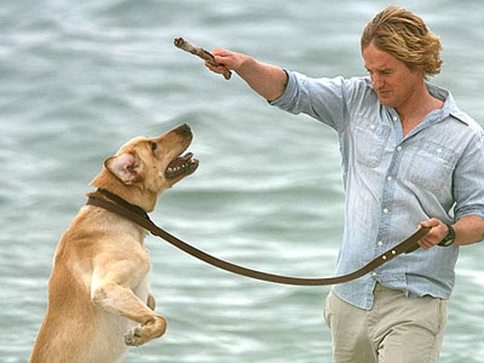

La Nostra Storia
Marley non è stato solo un cane; è stato il battito cardiaco della nostra casa. Arrivato come un piccolo batuffolo di pelo giallo, ha subito messo in chiaro che la sua energia sarebbe stata incontenibile.
Proprio come nel celebre racconto, Marley era un uragano di vivacità. Ha masticato mobili, ha travolto ospiti con il suo entusiasmo e ha fallito ogni tentativo di addestramento con una dignità quasi comica. Ma in ogni suo disastro c'era una purezza che ci ha insegnato più di quanto qualsiasi libro avrebbe potuto fare.

Attraverso i momenti di gioia, le sfide della crescita e i cambiamenti della nostra famiglia, lui era lì. Una presenza costante, leale e incrollabile. Ci ha visto ridere, ci ha visto piangere, e ha sempre saputo esattamente quando avevamo bisogno di una spinta col muso o di una coda che sbatteva forte contro il pavimento.
Marley ci ha insegnato che l'amore non ha bisogno di parole, che la felicità si trova nelle cose più semplici e che, alla fine, ciò che conta davvero è chi hai accanto nel viaggio della vita.